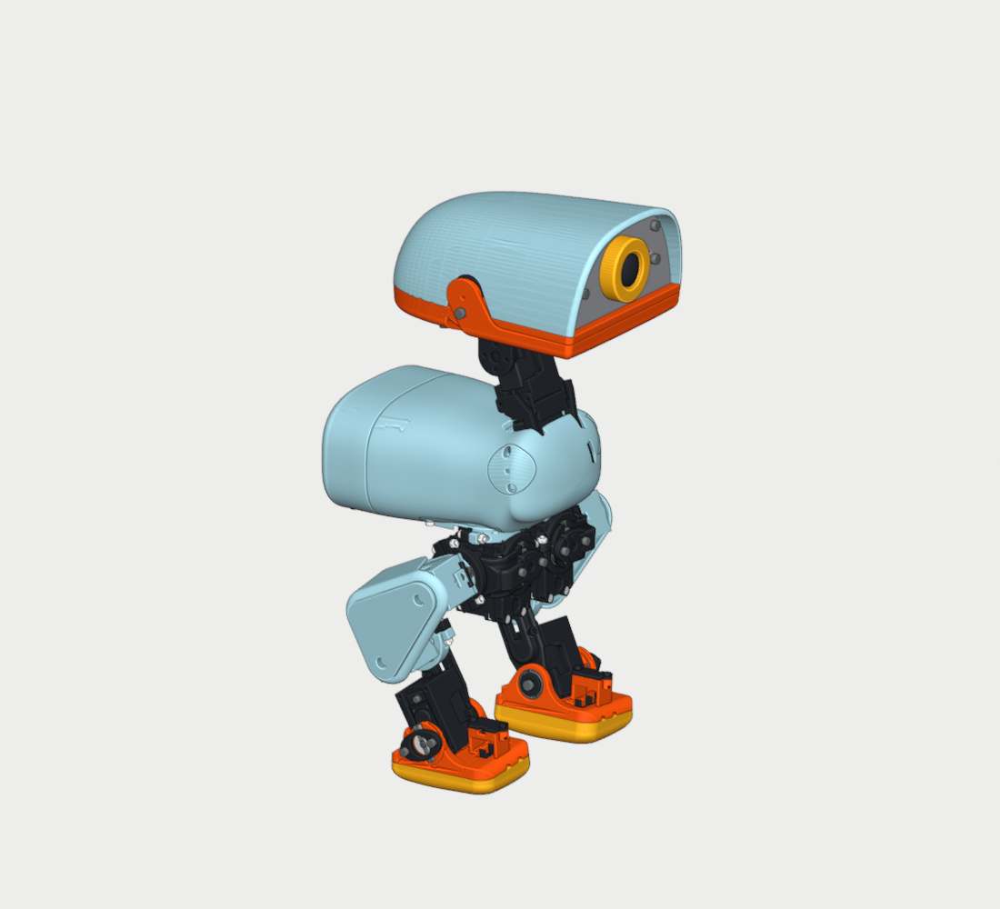
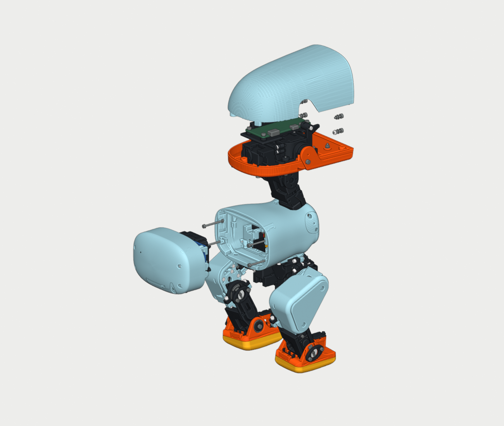
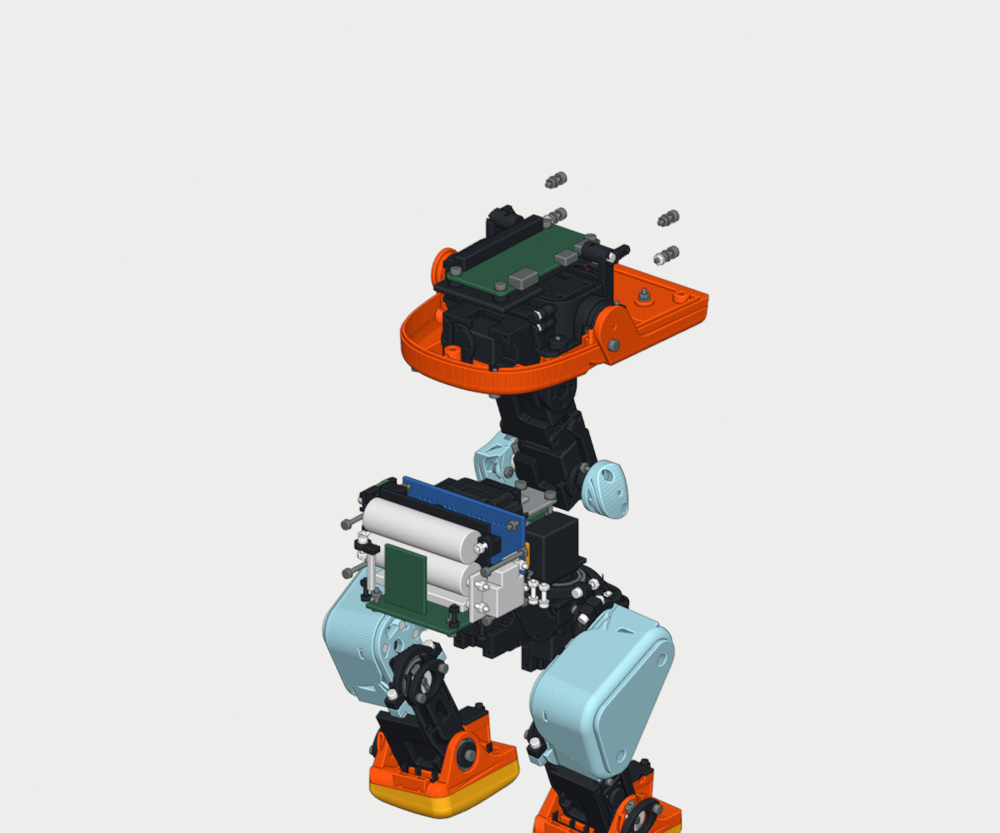

15 MG90S de posición ·14 articulaciones activas · boquilla0.4 mm · 80 piezas imprimibles, una unidad de cada archivo.
La forma aprobada se conserva como referencia inmutable. La revisión introduce uniones de servicio, refuerzos interiores y pequeños alivios funcionales; consultar el informe de forma para las diferencias medidas. No aplicar escala global para corregir un único alojamiento.



STL_POR_COLORES: 60 NEGRO PETG, 12 AZUL_CIELO PETG, 2 NARANJA PETG, 1 GRIS PETG, 2 NARANJA TPU95 A, 1 AMARILLO PETG, 2 NEGRO TPU_95 A. El STL no guarda color; lo indica la carpeta. Las piezas izquierda/derecha y todas las tapas ya son instancias separadas. Un archivo equivale a una pieza. Unidades milímetros, escala100%, orientación suministrada, base enZ=0.
Base de laminado comprobada:PETG, capas0.2 mm,4 perímetros,40%gyroid; TPU95 A,0.2 mm,3 perímetros,20%. Son ajustes iniciales de prototipo, no un certificado de resistencia. Temperaturas, velocidades, retracción y compensación de pie de elefante deben ajustarse al filamento y máquina reales.
Tapa trasera curva: exterior trasero hacia abajo y abertura hacia arriba, con3 capas de raft y soportes externos. Mantener esta orientación; no aplanar su superficie ni invertirla para evitar soportes.
Las siguientes alturas corresponden a losSTL suministrados con capa y primera capa de0.2 mm, sinraft ni altura variable. Programar una pausa después de la capa indicada y antes de la siguiente. El comando de pausa depende de la impresora: no se presuponeM601. Conservar la orientación y no elevar la pieza. Asentar cada tuerca al fondo del alojamiento y comprobar que no sobresale por encima del plano de boquilla; quedará suelta hasta el apriete posterior del tornillo. No sustituir una pausa por un cambio de color sin parada accesible.
En estas piezas utilizar soportes sólo desde la base y evitar soportar puentes; comprobar visualmente las cavidades en el laminador. El informeSOPORTES_Y_PAUSAS verifica los cordones del laminado diagnóstico frente a los corredores de entrada. Cualquier cambio de orientación, raft, soportes o capas exige recalcular y comprobar las pausas.
| ID | Pieza | Z modelo mm | Después capa | Antes capa | Tipo | Insertar |
|---|---|---|---|---|---|---|
| P03 | V7_MOD_UPPER_LEG_LEFT | 23.200 | 116 | 117 | M1.6 AF3.2 h1.3 | V7_HW_MG03_R_NUT, V7_HW_MG04_F_NUT, V7_HW_MG04_R_NUT |
| P03 | V7_MOD_UPPER_LEG_LEFT | 24.200 | 121 | 122 | M2 AF4 h1.6 | V15_HW_SERVICE_MG03_0_NUT, V15_HW_SERVICE_MG04_0_NUT, V15_HW_SERVICE_MG04_1_NUT |
| P04 | V7_MOD_LEG | 23.000 | 115 | 116 | M1.6 AF3.2 h1.3 | V7_HW_MG05_R_NUT |
| P06 | V7_MOD_NECK | 23.000 | 115 | 116 | M1.6 AF3.2 h1.3 | V7_HW_MG06_R_NUT, V7_HW_MG07_R_NUT |
| P11 | V7_MOD_UPPER_LEG_RIGHT | 23.200 | 116 | 117 | M1.6 AF3.2 h1.3 | V7_HW_MG12_R_NUT, V7_HW_MG13_R_NUT |
| P11 | V7_MOD_UPPER_LEG_RIGHT | 24.200 | 121 | 122 | M2 AF4 h1.6 | V15_HW_SERVICE_MG12_1_NUT, V15_HW_SERVICE_MG13_0_NUT, V15_HW_SERVICE_MG13_1_NUT |
| P12 | V7_MOD_LEG_2 | 23.000 | 115 | 116 | M1.6 AF3.2 h1.3 | V7_HW_MG14_R_NUT |
| P14 | V7_TAPA_BRAZO_00 | 20.000 | 100 | 101 | M1.6 AF3.2 h1.3 | V7_HW_MG02_F_NUT |
| P15 | V7_TAPA_BRAZO_01 | 20.000 | 100 | 101 | M1.6 AF3.2 h1.3 | V7_HW_MG11_F_NUT |
| P23 | V7_TAPA_BRAZO_10 | 20.000 | 100 | 101 | M1.6 AF3.2 h1.3 | V7_HW_MG08_R_NUT |
| P44 | 12CASE_TORSO_CONTINUO | 45.000 | 225 | 226 | M1.6 AF3.2 h1.3 | V7_HW_MG00_F_NUT, V7_HW_MG00_R_NUT, V7_HW_MG01_F_NUT, V7_HW_MG01_R_NUT |
| P44 | 12CASE_TORSO_CONTINUO | 46.000 | 230 | 231 | M2 AF4 h1.6 | V15_HW_SERVICE_MG00_0_NUT, V15_HW_SERVICE_MG00_1_NUT, V15_HW_SERVICE_MG01_0_NUT, V15_HW_SERVICE_MG01_1_NUT |
| Cantidad | Componente | Condición de montaje |
|---|---|---|
| 15 | MG90S 180° de posición | Lote real pendiente de medir; descartar giro continuo. No usar un horn de distinto estriado por fuerza. |
| 1 | Raspberry Pi Zero 2 W | En la cabeza. Este kit no tiene la huella de Raspberry Pi 4B. |
| 1 | Adafruit815 PCA9685 RevC | Alimentación lógica3.3 V; bus de servos5 V separado. Modificación R7/OE obligatoria. |
| 1 | Adafruit2472 BNO055 | Orientación nominal del CAD conservada; recalibrar con el robot y el imán de encendido retirado. |
| 1 | goBILDA3108-2827-0801 PDB | Distribución de potencia; mantener aisladas las soldaduras. |
| 1+1 | Pololu2881 D24V150F5 /3782 D36V28F5 | Dos raíles regulados5 V: servos /lógica. No conectar VBAT al GPIO de alimentación. |
| 1 | Pololu2813 HP | Interruptor electrónico manual, con entradaOFF desde ADC. No es un aislador de seguridad. |
| 2 | Vapcell K10 14500 flat-top | Pack2S1P a medida, celdas emparejadas y soldadura por puntos por ensamblador; aislamiento incluido en envolvente. |
| 1 | Mantech250040 HX-2S-D20 /HY2120-CB | Protección2S. Comprobar revisión entregada y umbrales por celda; balanceo/NTC no acreditados. |
| 1+1 | Littelfuse01530007Z +0297005.U | PortafusibleMINI y fusible5 A. Patillas completas y soporteFR4; no montar el antiguo HHL/SMD. |
| 1 | Adafruit1085 ADS1115 STEMMA QT | Montaje con4M2; divisor20k/10k0.1%, más driverPNP2N3906 y resistencias del plano. |
| 1+1 | Littelfuse59170-1-S-00-C /57045-000 | Reed interno y llave magnética externa; conexión sóloA–B del HP. |
| 4 | OmronSS-01-E | Dos contactosNO en paralelo por pie; no sustituir porSS10 de carga alta paraGPIO. |
| 6 | VishayMBA0204 0.1% para pies | Por pie:2.2k,10k,20k. Montaje punto a punto aislado, retenido en peines y tapa. |
| 14 | Rodamientos | 9×ET2216 abierto (16×22×4),1×6701ZZ (12×18×4, apoyo pasivo cabeza),1×6702ZZ (15×21×4, motor 08),2×6700 ABIERTO (10×15×3; no sustituir por 6700ZZ de 4 mm),1×623ZZ (3×10×4). Comprobar dimensiones de la marca comprada. |
| 1 | microSD + arnés + conectores + aislamiento | La capacidad de alojamiento se comprueba nominalmente; el largo final del arnés depende del lote y del montaje. |
| 1 externo | SkyRC B6neo+ SK-100211 | Selección externa propuesta:LiIo2S BalanceCHG,0.3 A,4.1 V/celda(8.2Vtotal). Menor energía que carga completa4.2 V; verificar puertos del pack con su ensamblador. |
Consultar la lista de compra de herrajes, las plantillas de FR4 y el orden de entrada y servicio de la electrónica.
La lista de tornillería por objeto se adjunta por separado. Medir longitudes bajo cabeza y altura real de tuercas/arandelas. Las fijaciones identificadas M2x11 se preparan desde M2x12: cortar con tuerca puesta, desbarbar/chaflanar y sacar la tuerca para repasar la entrada de rosca. Los doce tornillos CAP identificados de 5.8 mm se preparan desde M2x6, conservando su cabeza especificada. No sustituir estas longitudes por otras mayores sin revisar el montaje.
Herramientas: vástago de destornillador de diámetro máximo 3 mm, puntas AF1.5 o AF1.3 según la cabeza real y contrallave AF4. Las 16 tuercas que requieren contrallave usan una envolvente estrecha de 5.7 × 1 mm; se adjuntan SVG/DXF para fabricar la herramienta en metal. No se ha seleccionado un SKU comercial ni certificado su resistencia: comprobarla con herrajes sueltos antes de usarla en el robot.
Los brazos son los OEM del propio lote; no imprimir ni forzar el estriado. Longitud total del brazo recortado: índices 00/01/08, 13.8 +0/−0.2 mm; índices 02/03/04/10/11/12/13, 14.8 +0/−0.2 mm; índices 05/06/07/14, 18 ± 0.2 mm. En los siete brazos de 14.8 mm, mantener el máximo indicado para conservar la holgura del aro interior; medir también la anchura real. Anchura nominal 5 mm, espesor 2.4 mm, cubo 10.4 mm; comprobar primero las probetas. El servo 09 no se conecta. El cuello utiliza dos tapas enrasadas con el torso: quitar ambas para introducir 623ZZ desde −Z del motor 06 y el brazo desde +Z. Los dos tornillos originales de cada tapa mantienen su posición; los pozos exteriores permiten introducir tornillo, arandela y útil. No pegar las tapas ni cerrar sus pozos.
Rodamientos: los once apoyos añadidos utilizan una abrazadera partida con su tapa y dos M2. Colocar el rodamiento axialmente antes de cerrar la segunda mitad; consultar el informe de cada eje para su dirección. Cargar las tuercas en sus accesos laterales antes de unir las mitades. Las dos abrazaderas de cadera de pista corta conservan el asiento axial del rodamiento; no desplazarlo para que coincida con toda la anchura impresa. La unión pasiva de la cabeza requiere una prueba física de retención axial, además de comprobar que gira libre.
Precarga del apoyo pasivo de cabeza: en banco, con los servos 08/10 y el brazo 10 todavía fuera, introducir el M2 del apoyo pasivo por +Z local de CAP10 antes del rodamiento y la mejilla. Precargar su tuerca en la placa vacía antes del eje; introducir después el journal por +Z y apretar con útil AF1.5 desde −Z local. El tornillo completo no atraviesa el taladro desde el lado del útil. Completar este subconjunto antes de cerrar los módulos vecinos.
Cabeza: precolocar la bandeja de la Pi vacía. Con la mejilla posterior desmontada, introducir el módulo del cuello por la trayectoria axial, cargar sus apoyos y cerrar la mejilla con sus dos tornillos especificados. Fijar la bandeja y después instalar la Pi. La cubierta azul, frontal y ojo se retiran hacia arriba para servicio; el labio superior naranja se queda con la mitad inferior. La nueva mejilla es una pieza mecánica desmontable y no debe pegarse.
Acceso inferior a batería: HP y D24 comparten una sola tapa azul curva, identificada en los archivos como V15_D24_BANDEJA_INFERIOR_DESMONTABLE. Retirar sus tres tornillos de anclaje: los dos de la bandeja D24 y el del antiguo tope HP. La tapa sale hacia abajo con D24 y sus cuatro tornillos de placa; HP permanece en su posición. Sujetar el conjunto al abrirlo. Para el primer montaje, introducir K10 desde abajo antes que PCM; luego montar PCM, ADS y las placas que indique la secuencia electrónica adjunta.
Para retirar el pack, seguir el orden inverso de la secuencia electrónica adjunta: desmontar PDB, PCA y portador ADS donde lo indique esa secuencia; acceder después a los dos clips PCM y al retén K10. Retirar PCM antes que K10. Sujetar placas y cableado sobre el banco, con los conectores desconectados y aparcados. Nunca tirar del pack por los cables ni dejar la PCM colgando de sus soldaduras.
Pack2S → protecciónPCM → fusibleMINI5 A → HP → D24 →5 V SERVOS/PDB
└→D36 →5 V LÓGICA/Pi
HP.VOUT →20k(0.1%)→ ADS AIN0 →10k(0.1%)→P−
ADS ALERT →PNP2N3906 + red de resistencias →HP.OFF
Todas las masas de la carga vuelven aP− protegido. B− crudo es sólo del pack/PCM.
Cada pie:
D36.5 V →2.2k→S →[NO talón || NO punta]→COM→P−
└→10k→GPIO →20k→P−
Salida activaLOW. Nunca aplicar5 V directamente alGPIO.
| Señal | BCM | Pin físico | Conexión |
|---|---|---|---|
| SDA | 2 | 3 | PCA+BNO+ADS, bus3.3 V |
| SCL | 3 | 5 | PCA+BNO+ADS, bus3.3 V |
| Pie izquierdo | 22 | 15 | NodoGPIO del divisor del pie |
| Pie derecho | 27 | 13 | NodoGPIO del divisor del pie |
| ADS ALERT | 17 | 11 | Lectura de fallo y driverPNP→HP.OFF |
| PCA OE | 5 | 29 | Pull-up10k a3.3 V; mantenerHIGH hasta inicialización válida |
| Pi5 V | — | 2 | SalidaD36 regulada5 V |
| GND | — | 6 | Retorno protegidoP− |
| Pi3V3 | — | 1 | Lógica3.3 V; no es la potencia de los servos |
Para montar el cableado, usar la secuencia de conexiones y tendido y la tabla de extremos, polaridad y corte. Medir los largos sobre el montaje real antes de cortar. La posición de los primeros tramos en CAD no prueba el arnés completo.
PCA9685 RevC: retirarR7, el pull-downOE10k0805 original, y añadir10kOE→Pi3V3. Mantener ambos formaría un divisor a1.65 V. BCM5 controlaOE; BCM22/27 ya son los pies. OE permaneceHIGH durante arranque, configuraciónADC y cualquier fallo.
Catorce señales de servo activas: el goBILDA es un distribuidor de8 canales con pares de conectores; aquí se aprovechan sus contactos comunesGND/V+ para potencia. Los cables de señal de cada servo van individualmente alPCA9685, no a los pinesSdelPDB. Mantener los interruptoresSignalSharing apagados y usar las derivaciones de dos hilos de potencia del inventario. Los15 conductoresSdelPCA están previstos soldados por la cara posterior en los taladros pasantes de1 mm; no instalar conectores altos hacia elPDB. El canal14 queda deshabilitado y el servo físico09 desconectado; su derivación de reserva se aparca aislada y no se enchufa. Verificar continuidad de cada derivación de tres a dos más uno antes de conectar la batería. Configuración eléctrica y montaje del fabricante.
ADS1115: dirección0x48, AIN0 contraGND, PGA±4.096 V,128 SPS continuo, comparador de ventana activoLOW, no enclavado, cola1. Con OE alto, iniciar con 0xC293 (comparador deshabilitado), escribir y leer de vuelta los umbrales 17600 (6.6 V nominal del pack) y 32767, activar 0xC290 y verificar su lectura. Esperar al menos 20 ms antes de comprobar el estado de ALERT y permitir la activación. La librería adjunta programa el ADC; la puesta en servicio se comprueba en banco. Aviso6.8 V; parada6.6 V. El divisor tomaHP.VOUT, no el pack siempre conectado, para evitar retroalimentar el ADC apagado. El HP mantiene apagado el sistema tras la señal; medir el comportamiento real del driver y del corte antes de conectar motores.
La PCM protege cada celda como respaldo. La autonomía, el pico admisible del arnés y la corriente de marcha de los15 servos no están medidos;8 A de una celda K10 no se convierten en16 A al poner dos en serie. El fusible MINI de 5 A protege la rama del pack frente a sobrecorrientes; su curva tiempo-corriente no limita instantáneamente el consumo a 5 A. Medir picos y corriente continua. No aumentar el calibre sin recalcular el conjunto.
Encargar el pack aislado 2S1P con tamaño máximo 14.7 × 52 × 29.5 mm, incluyendo aislantes y terminales, según la envolvente del CAD; las patillas, soldaduras, fishpaper y termorretráctil deben caber sin comprimir las celdas. La envolvente no incluye un bucle de cables ilimitado. No sustituirlo por un portapilas voluminoso ni añadir un cargador dentro del cuerpo.
El pack usa un XT30 principal B+/B− y un JST-XH de 3 vías: pin 1=B−, 2=BM, 3=B+. En el conector del robot sólo se cablea el pin central BM; los pines 1 y 3 quedan aislados y sin conexión. La carga se realiza con el pack extraído y AMBOS conectores desconectados del robot. El cargador externo conecta al XT30 crudo y al XH de equilibrado. Propuesta externa:SkyRCB6neo+SK-100211, enLiIo2S, BalanceCHG,0.3 A y4.1 V/celda. La especificación de corriente a este nivel es±0.2 A; comprobarla en la primera carga. Esta elección carga por debajo de4.2 V y no permite asumir la capacidad nominal completa. El ensamblador debe comprobar el arnés principal y de equilibrado: un cargador con negativos comunes puede puentearP− medianteB− del balanceador; en tal conexión no se atribuye a laPCM protección de carga. No improvisar un puerto compartido de carga/uso.
Fuentes: VapcellK10, PCM250040, manualB6neo+V112, páginas5,9,14–16. La selección del cargador externo no constituye compra ni prueba del pack.
El archivo de calibración empieza bloqueado: no contiene pulsos, signos ni límites medidos inventados. Identificar cada servo por índice físico y canalPCA antes de alimentar. El servo físico09/canal14 es la mandíbula fija: dejarlo desconectado y deshabilitado. Centrar y medir un servo cada vez, desmontado o con mecanismo libre, usando fuente limitada y parada accesible.
| wire_label | PCA9685_channel | joint | physical_mesh_index | servo_home_deg | measured_pulse_home_us | measured_direction_sign | measured_horn_offset_deg | measured_safe_min_deg | measured_safe_max_deg | actual_unit_identified | enabled |
|---|---|---|---|---|---|---|---|---|---|---|---|
| S00 | 0 | left_hip_yaw | 0 | 90.0 | False | False | |||||
| S01 | 1 | left_hip_roll | 2 | 90.0 | False | False | |||||
| S02 | 2 | left_hip_pitch | 4 | 90.0 | False | False | |||||
| S03 | 3 | left_knee | 3 | 90.0 | False | False | |||||
| S04 | 4 | left_ankle | 5 | 90.0 | False | False | |||||
| S05 | 5 | neck_pitch | 6 | 90.0 | False | False | |||||
| S06 | 6 | head_pitch | 7 | 90.0 | False | False | |||||
| S07 | 7 | head_yaw | 8 | 90.0 | False | False | |||||
| S08 | 8 | head_roll | 10 | 90.0 | False | False | |||||
| S09 | 9 | right_hip_yaw | 1 | 90.0 | False | False | |||||
| S10 | 10 | right_hip_roll | 11 | 90.0 | False | False | |||||
| S11 | 11 | right_hip_pitch | 13 | 90.0 | False | False | |||||
| S12 | 12 | right_knee | 12 | 90.0 | False | False | |||||
| S13 | 13 | right_ankle | 14 | 90.0 | False | False | |||||
| S14 | 14 | jaw | 9 | 90.0 | False | False |
El modelo de entrenamiento y su política se conservan. Esta revisión cambia piezas y distribución de masa; su ejecución en simulación no valida automáticamente la geometría, masas ni el control del robot real. LosMG90S de tres hilos no ofrecen realimentación externa de posición.
| ID | Pieza (imprimir una) | Color / material | Medidas orientadas mm |
|---|---|---|---|
| P01 | V7_MOD_YAW2ROLL | NEGRO / PETG | 23.80 × 23.00 × 6.53 |
| P02 | V7_MOD_HIP_L | NEGRO / PETG | 33.04 × 37.32 × 32.24 |
| P03 | V7_MOD_UPPER_LEG_LEFT | AZUL_CIELO / PETG | 47.66 × 61.00 × 30.20 |
| P04 | V7_MOD_LEG | NEGRO / PETG | 62.11 × 21.60 × 32.00 |
| P05 | V7_MOD_ANKLE_LEFT | NEGRO / PETG | 39.14 × 54.38 × 39.83 |
| P06 | V7_MOD_NECK | NEGRO / PETG | 72.84 × 23.57 × 33.60 |
| P07 | V7_MOD_NECK_PITCH | NEGRO / PETG | 37.00 × 23.62 × 31.28 |
| P08 | V7_MOD_YAW_ROLL_MOTION | NEGRO / PETG | 32.40 × 24.30 × 7.55 |
| P09 | V7_MOD_BEARING_ROLL | NEGRO / PETG | 23.80 × 23.00 × 6.53 |
| P10 | V7_MOD_HIP_L_2 | NEGRO / PETG | 33.04 × 37.32 × 32.24 |
| P11 | V7_MOD_UPPER_LEG_RIGHT | AZUL_CIELO / PETG | 47.66 × 61.00 × 30.20 |
| P12 | V7_MOD_LEG_2 | NEGRO / PETG | 62.11 × 21.60 × 32.00 |
| P13 | V7_MOD_ANKLE_RIGHT | NEGRO / PETG | 41.22 × 55.78 × 39.83 |
| P14 | V7_TAPA_BRAZO_00 | NEGRO / PETG | 39.65 × 23.00 × 23.80 |
| P15 | V7_TAPA_BRAZO_01 | NEGRO / PETG | 39.65 × 23.00 × 23.80 |
| P16 | V7_TAPA_BRAZO_02 | NEGRO / PETG | 20.89 × 31.95 × 6.35 |
| P17 | V7_TAPA_BRAZO_03 | NEGRO / PETG | 15.44 × 21.83 × 2.80 |
| P18 | V7_TAPA_BRAZO_04 | NEGRO / PETG | 20.79 × 16.82 × 3.65 |
| P19 | V7_TAPA_BRAZO_05 | NEGRO / PETG | 15.40 × 21.86 × 2.80 |
| P20 | V7_TAPA_BRAZO_06 | AZUL_CIELO / PETG | 18.40 × 22.80 × 14.83 |
| P21 | V7_TAPA_BRAZO_07 | NEGRO / PETG | 15.28 × 21.95 × 2.80 |
| P22 | V7_TAPA_BRAZO_08 | NEGRO / PETG | 22.80 × 14.00 × 3.65 |
| P23 | V7_TAPA_BRAZO_10 | NEGRO / PETG | 39.48 × 33.90 × 25.90 |
| P24 | V7_TAPA_BRAZO_11 | NEGRO / PETG | 20.89 × 31.95 × 6.35 |
| P25 | V7_TAPA_BRAZO_12 | NEGRO / PETG | 16.82 × 20.79 × 2.80 |
| P26 | V7_TAPA_BRAZO_13 | NEGRO / PETG | 20.79 × 16.82 × 3.65 |
| P27 | V7_TAPA_BRAZO_14 | NEGRO / PETG | 16.78 × 20.82 × 2.80 |
| P28 | V7_TAPA_RODAMIENTO_CUELLO | AZUL_CIELO / PETG | 21.60 × 21.60 × 12.05 |
| P29 | V7_SEPARADOR_EJE_CUELLO | NEGRO / PETG | 4.00 × 4.00 × 0.60 |
| P30 | V7_RETENEDOR_PASIVO_HEADROLL | NEGRO / PETG | 13.60 × 13.60 × 1.20 |
| P31 | V7_RETENEDOR_PASIVO_TOBILLO_05 | NEGRO / PETG | 10.60 × 10.60 × 1.20 |
| P32 | V7_RETENEDOR_PASIVO_TOBILLO_14 | NEGRO / PETG | 10.59 × 10.59 × 1.20 |
| P33 | V7_HEAD_TOP_ANCLADO | AZUL_CIELO / PETG | 53.33 × 91.72 × 122.69 |
| P34 | V7_HEAD_LOWER_ANCLADO | NARANJA / PETG | 26.34 × 116.75 × 91.76 |
| P35 | V7_HEAD_FACE_ANCLADO | GRIS / PETG | 44.63 × 87.65 × 12.50 |
| P36 | V7_HEAD_JAW_FIJO | NARANJA / PETG | 35.86 × 71.81 × 91.22 |
| P37 | V7_HEADCORE_ANCLADO | NEGRO / PETG | 23.80 × 54.85 × 24.40 |
| P38 | V7_HEAD_LIP_LOWER_RELIEVED | NARANJA / TPU95 A | 32.25 × 87.67 × 8.20 |
| P39 | V7_HEAD_LIP_UPPER_RELIEVED | NARANJA / TPU95 A | 32.57 × 87.82 × 3.00 |
| P40 | V7_EYE_RING_CLEARANCED | AMARILLO / PETG | 30.00 × 30.00 × 9.50 |
| P41 | V7_SRC_V4_MD_ankle_left__sole_left | NEGRO / TPU_95 A | 56.33 × 44.53 × 12.91 |
| P42 | V7_SRC_V4_MD_ankle_right__sole_right | NEGRO / TPU_95 A | 56.33 × 44.53 × 12.91 |
| P43 | V7_SRC_V5_PI_ZERO_BANDEJA_CON_ANCLAJES | NEGRO / PETG | 71.40 × 50.60 × 6.40 |
| P44 | 12CASE_TORSO_CONTINUO | AZUL_CIELO / PETG | 86.30 × 88.04 × 57.45 |
| P45 | 12CASE_TAPA_TRASERA_ENRASADA | AZUL_CIELO / PETG | 55.07 × 88.22 × 46.90 |
| P46 | V15_SERVICE_FRONT_YAW2ROLL | NEGRO / PETG | 42.11 × 33.80 × 9.60 |
| P47 | V15_SERVICE_FRONT_UPPER_LEG_LEFT_0 | AZUL_CIELO / PETG | 62.93 × 13.91 × 48.22 |
| P48 | V15_SERVICE_FRONT_YAW_ROLL_MOTION_0 | NEGRO / PETG | 36.80 × 20.00 × 8.80 |
| P49 | V15_SERVICE_FRONT_JAW_SOFT | NEGRO / PETG | 38.50 × 45.75 × 79.50 |
| P50 | V15_SERVICE_FRONT_BEARING_ROLL | NEGRO / PETG | 42.11 × 33.80 × 9.60 |
| P51 | V15_SERVICE_FRONT_UPPER_LEG_RIGHT_0 | AZUL_CIELO / PETG | 62.93 × 13.91 × 48.22 |
| P52 | V15_SERVICE_FRONT_TRUNK_BASE_0 | AZUL_CIELO / PETG | 42.21 × 34.40 × 9.77 |
| P53 | V15_SERVICE_FRONT_TRUNK_BASE_1 | AZUL_CIELO / PETG | 42.21 × 34.40 × 9.77 |
| P54 | V15_OJO_CIEGO_IMPRIMIBLE | NEGRO / PETG | 16.94 × 62.80 × 26.22 |
| P55 | V15_FOOT_L_HEEL_ACTUADOR | NEGRO / PETG | 8.75 × 5.12 × 2.00 |
| P56 | V15_FOOT_L_TOE_ACTUADOR | NEGRO / PETG | 8.75 × 5.12 × 3.35 |
| P57 | V15_FOOT_R_HEEL_ACTUADOR | NEGRO / PETG | 8.75 × 5.12 × 2.00 |
| P58 | V15_FOOT_R_TOE_ACTUADOR | NEGRO / PETG | 8.75 × 5.12 × 3.35 |
| P59 | V15_FOOT_L_TAPA_CIRCUITO | NEGRO / PETG | 20.73 × 12.05 × 2.90 |
| P60 | V15_FOOT_R_TAPA_CIRCUITO | NEGRO / PETG | 20.73 × 12.05 × 2.90 |
| P61 | V15_K10_RETEN_DESMONTABLE | NEGRO / PETG | 7.90 × 66.80 × 29.80 |
| P62 | V15_PCM_TOPE_DESMONTABLE | NEGRO / PETG | 7.20 × 10.50 × 13.66 |
| P63 | V15_REED_TAPA_PROTECTORA | NEGRO / PETG | 7.00 × 11.65 × 2.40 |
| P64 | V15_ADC_CARRIER_DESMONTABLE | NEGRO / PETG | 23.38 × 31.80 × 4.50 |
| P65 | V15_D24_BANDEJA_INFERIOR_DESMONTABLE | AZUL_CIELO / PETG | 38.58 × 67.20 × 21.14 |
| P66 | V15_BM_FR4_CAP_R2 | NEGRO / PETG | 9.90 × 17.17 × 5.60 |
| P67 | V15_BM_FR4_KEY_R2 | NEGRO / PETG | 7.40 × 6.97 × 3.10 |
| P68 | V15_PCM_TOPE_DESMONTABLE_DERECHO | NEGRO / PETG | 7.20 × 13.40 × 13.66 |
| P69 | V15_HEADROLL_CHEEK_DESMONTABLE | NEGRO / PETG | 35.15 × 21.95 × 71.00 |
| P70 | V15_ET_RADIAL_CLAMP_00F | NEGRO / PETG | 5.20 × 34.40 × 14.01 |
| P71 | V15_ET_RADIAL_CLAMP_01F | NEGRO / PETG | 5.20 × 34.40 × 14.01 |
| P72 | V15_ET_RADIAL_CLAMP_02F | NEGRO / PETG | 5.20 × 33.80 × 14.01 |
| P73 | V15_ET_RADIAL_CLAMP_03F | NEGRO / PETG | 5.20 × 34.40 × 14.01 |
| P74 | V15_ET_RADIAL_CLAMP_11F | NEGRO / PETG | 5.20 × 33.80 × 14.01 |
| P75 | V15_ET_RADIAL_CLAMP_12F | NEGRO / PETG | 5.20 × 34.40 × 14.01 |
| P76 | V15_ET_RADIAL_CLAMP_04F | NEGRO / PETG | 5.20 × 34.40 × 14.02 |
| P77 | V15_ET_RADIAL_CLAMP_10F | NEGRO / PETG | 5.20 × 32.40 × 13.22 |
| P78 | V15_ET_RADIAL_CLAMP_13F | NEGRO / PETG | 5.20 × 34.40 × 14.02 |
| P79 | V15_ET_RADIAL_CLAMP_08F | NEGRO / PETG | 5.20 × 32.40 × 12.62 |
| P80 | V15_6701_RADIAL_CLAMP_10R | NEGRO / PETG | 5.80 × 27.00 × 11.33 |
Manifiesto fuenteSHA256:84685909b7dcc0aa8d8e0395bd3ef6870371f1048ccccf32a813d27d254d8b1f. Ensamblaje fuenteSHA256:d1e061923094f4cd2fcfbbeb800a2daeffc9b78ee9077f8575ebd8b72b0ccbb4. Conservar estos hashes con las medidas de la primera unidad.